Venture Risk Management and Customer Discovery
You are here: refine, then validate.
The Value Creation Analysis runs in six steps.
Carry over your X·Y·Z from Session 2.
Make it explicit on the Business Model Canvas.
The next-best option and adjacent industries.
How your model differs, box by box.
Why buy this? What risks do customers face?
Deliver profitably? Which risks to manage?
Today's job: make your model testable.
- Run the VCA. Treat every box as a hypothesis, not a fact. Fill both canvases: your model, then the differences against your point of comparison.
- Rank the risk. Score each hypothesis (doubt × importance) and flag the few that could break the model. We work through this today.
- Line up 10+ interviews. Name at least ten people you can talk to about the hypotheses and risks you flagged. Mom Test rules apply; we cover those today.
- Design an experiment or two. Pick one or two concrete tests or prototypes that challenge your riskiest assumptions.
Thesis, VCA, riskiest assumptions, experiments + prototype, and your presentation.
A5 + A7 · one per team. Friday morning we run peer review in class, then give you time to update before you present.
What you build today, you defend in class tomorrow.
- 10 min. Team A presents its canvas and VCA.
- 10 min. Team B gives feedback and names the 3 most questionable assumptions.
- 10 min. Team B presents its canvas and VCA.
- 10 min. Team A gives feedback and names the 3 most questionable assumptions.
Pair with your assigned team and stress-test each other.
Then update your canvas and sharpen your pitch in the time we give you. No photo to submit.
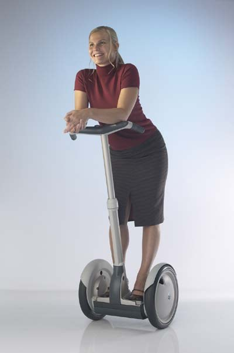
A $500M valuation before it sold a single unit.
$80M from Kleiner Perkins & CSFB · 12.5 mph · 80 lbs · 11-mile range · $9,000 (consumer $4,950) · 40,000 units a month projected by end of 2002.
The best team money could assemble.
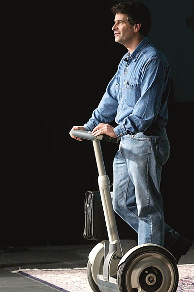
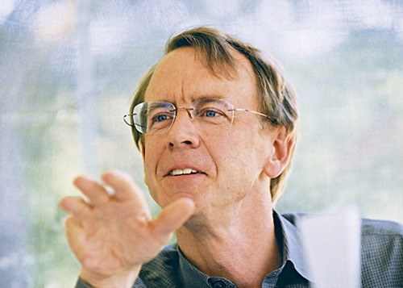
Five years of hype, then the numbers came in.
The future of transport became a punchline.
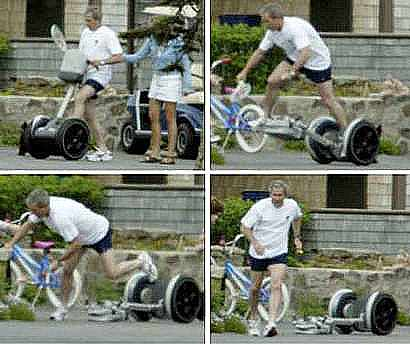
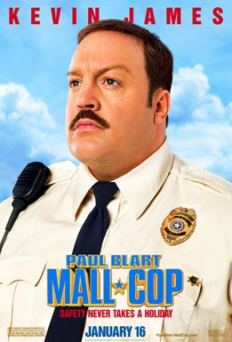
Great team, great funding, great press. They still tested the wrong risk.
They spent $50M nailing the things they already knew.
What they did · $50M+ · 2000-01
What they postponed · $?? · 2002
New-venture planning is risk reduction and learning, not growth.
Before product-market fit, learning rate is the most important KPI.
Not revenue, not headcount, not the size of the round. The one number that matters is learning rate per week.
Think like a scientist.
Ask, research, hypothesize, experiment, analyze, share. Including the branch most founders skip: is the test itself valid? A broken experiment says nothing about the idea.
Every result, validated or not, feeds the next question.
Founders trained to think like scientists kill weak ideas sooner.
It started as a randomized control trial of 116 Italian startups. Treated founders learned to state a theory, write falsifiable hypotheses, and test them. The follow-up replicated the result across 759 firms in four trials.
Trained founders terminate weak ideas earlier and pivot in a focused way, once or twice, rather than never or endlessly. They are no more likely to quit.
This is INSEAD research. Co-author Chiara Spina is a professor here.
Evidence-based
entrepreneurship.
Most frameworks skip the hard part.
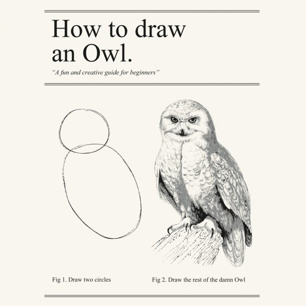
So here is a real step-by-step, one that doesn't jump from "two circles" to "the rest of the owl."
Four steps from a fragile idea to what to do next.
Make every assumption explicit through your canvas and VCA.
Score every box: risk factor = doubt × centrality.
Doubt · 1–3
How unsure are you that this box is true?
Centrality · 1–3
If it is false, how badly does the whole business break?
Multiply the two for every box, then test the ones that are both uncertain and central. Where you and your team agree a box is highly uncertain and central, pivot or design an experiment. Where you disagree on the doubt or centrality, that gap is itself worth testing.
The most common BS founders tell themselves.
Market & consumers
Delivery & production
For Segway, the cheapest tests were also the most critical.
| Key risk | Risk | Mitigating task | Cost | |
|---|---|---|---|---|
| A | Will technical performance be acceptable? | ••• | Build & test an alpha prototype | $1M |
| B | Can we establish production capacity? | • | Design supply chain, set up production | $3M |
| C | How reliable & robust can we make it? | • | Production-intent design, life testing | $5M |
| D | In how many states will it be legal? | ••• | Lobby state & local governments | $7M |
| E | How strong is the IP barrier? | •• | File patents | $0.1M |
| F | Can we staff a large enterprise? | • | Recruit the management team | $1M |
| G | Which market segments & benefits resonate? | ••• | Customer interviews & demonstrations | $0.1M |
| H | What is the right price point? | ••• | Competitive analysis, customer surveys | $0.05M |
| I | What is the sales trajectory? | ••• | Diffusion modeling, purchase-intent survey | $0.1M |
Rows G-I, the demand questions, were the highest risk and the cheapest to answer. Segway tested them last.
Same tasks, two orders. One cuts risk far cheaper.
Same idea, lighter, and a completely different model.
As fast as a Segway. Lighter. Far cheaper. But the unlock was the model behind Lime, Bird, and Jump, not the vehicle.
- You find it by phone, no need to own one.
- The company charges it, places it, maintains it.
- Lost or stolen? Not yours, no big deal.
There are two ways to learn and shrink your biggest risks.
Strategy 1 · Talk to customers
Strategy 2 · Run experiments
Talk to
customers.
Dig for their pains, gains, and requirements.
Pains
What problem are they solving? How bad is it, and how do they handle it now, at what cost in time and money?
Gains
What outcome are they actually trying to reach?
Requirements
What would any solution have to do to win them over?
Keep one list: name, title, company. It tells you who to interview, and surfaces patterns across everyone you have talked to.
Resist yes/no. Ask for stories.
Do not ask
"Is a lower cost important to you?"
Leading: it invites a polite yes.
Ask instead
"What role does cost play in your decision-making?"
Open: it invites the real story.
End every interview with two questions.
"What else should I have asked?" and "Who else should I talk to?" Then thank them, and keep the door open.
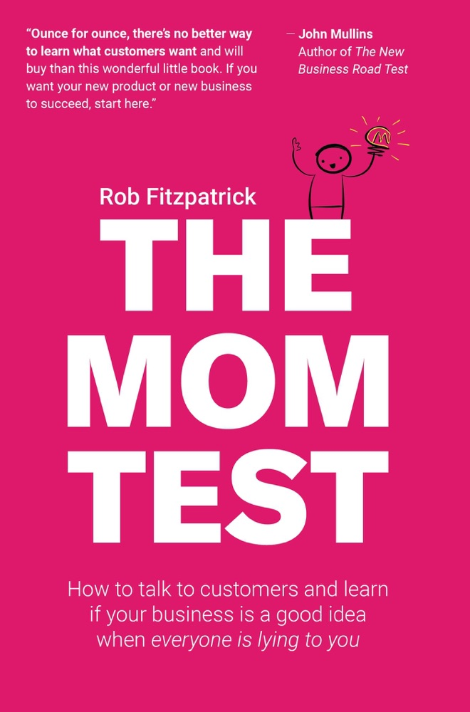
The Mom Test: ask so that even your mom can't mislead you.
Friends, family, and polite strangers tell you what you want to hear. Better questions get past that.
Four moves that get you the truth.
Ask about their life, not your idea
Get specific, in the past
Listen more than you talk
Deflect compliments, dig beneath features
Is this a good customer interview?
Is this a good customer interview?
They went out and logged the conversations.
- Ful Foods: 150+ interviews over one summer.
- StanPlus / RED.Health: outside hospitals, talking to ambulance crews and patients.
- People Pods: knocking on doors, talking to construction workers.
- Knix: dozens of classmates; sourced fabric on an INSEAD trip to South Korea.
- Pipo Saúde: Thiago Torres (19D) interviewed dozens of med students; won the IVC.
Stories and evidence beat TAM, SAM, SOM.
A hypothesis that fails still taught you something few other people know.
You are an INSEADer. People love talking to you. Use it.
Let AI hold the notes. You hold the conversation.
Record on your phone and let a tool transcribe and summarize. You stay fully in the human conversation while it captures every word.
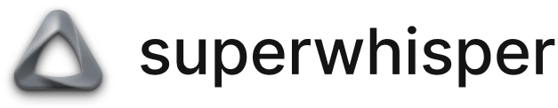
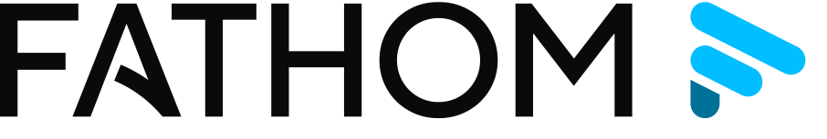
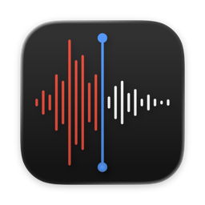
Voice MemosThen keep every transcript in one place and build a searchable brain of all your conversations. Mine it later for patterns: the same problem said three ways, the price nobody will pay, the workaround everyone uses.
The interview stays human. An LLM is polite. It is not your customer.
Find 10 people who can speak to your riskiest hypotheses.
- Name your riskiest hypotheses. Pick the assumptions that, if wrong, break the model.
- Open LinkedIn. Search for people who live near those hypotheses: buyers, users, operators, people who have built the thing.
- List 10 names. You do not have to interview them. For now, just get the names. Current students count.
- Note why each one. One line per person on what they could tell you that nobody else can.
A short list of 10 real people, each tied to your riskiest hypotheses.
This is your interview pipeline. The conversations come next. You are an INSEADer. People will take the call.
Experiments, prototypes
and MVPs.
Build something usable at every stage.
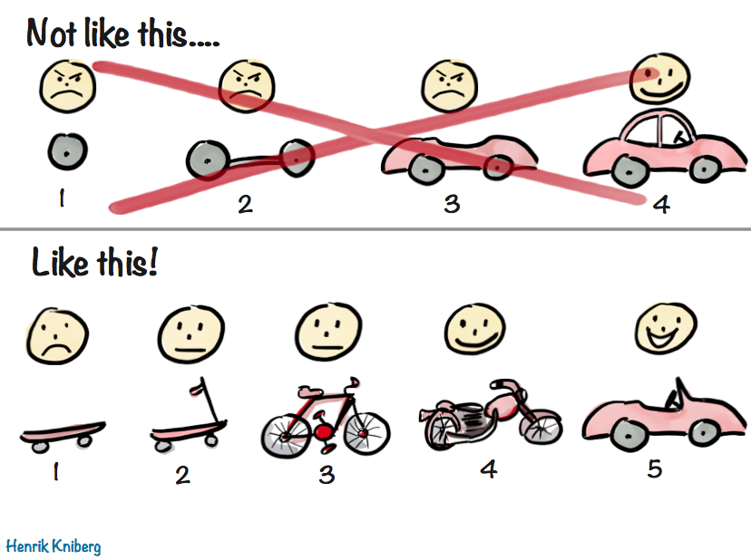
Each version in the bottom row works on its own, so each one teaches you something. The top row only moves once, at the very end.
AI is dropping the cost of building to near zero.
A weekend prototype
The killer combination right now: Claude Code (especially ultracode), a design tool, and GitHub Pages to stand up a working prototype over a weekend. Pick the combo that fits you.
Prototype, not business
AI helps with prototype execution. It does not yet run the business for you. That part is still on you.
Read your CAC
An AI prototype plus a landing page gives you a real read on your customer-acquisition cost.
Six MVP methods. Each one tests demand without building the whole thing.
1 · Wizard of Oz
It looks automated. People do the work behind the curtain.
2 · Landing page & video
A page or demo video. Measure sign-ups and real interest.
3 · Concierge
Deliver the service by hand, customer by customer.
4 · Crowdfunding
Pre-orders prove demand with real money up front.
5 · Non-functional prototype
A front end that looks real and does nothing yet.
6 · Audience building
Give value free, grow a community, monetize later.
The next six slides take them one at a time, each with a real INSEAD example.
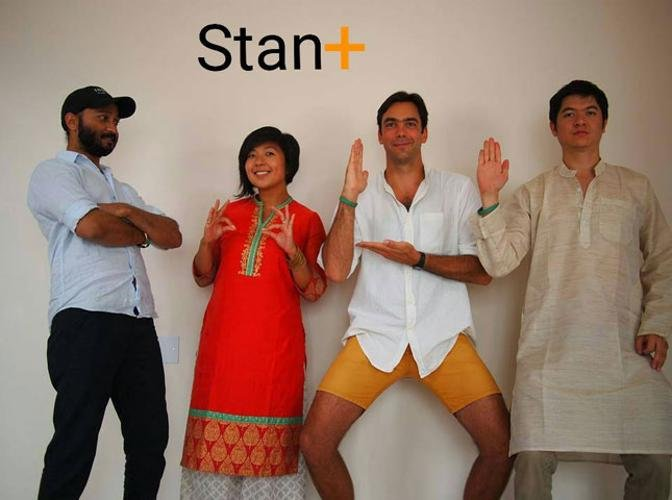
Wizard of Oz
Create a product that looks like it works automatically, while the work is actually done by hand behind the scenes.
Landing page & video
Put up a simple page or a short demo video for a product you have not built, then measure sign-ups and interest.
Dropbox had no working sync to show, so Drew Houston filmed a three-minute demo of the product as if it already worked. The video stood in for the product and took the beta waitlist from 5,000 to 75,000 overnight.
Test demand before you build anything.
People Pods is affordable, dignified housing for migrant construction workers. The team tested demand with a landing page and this short video before building anything.
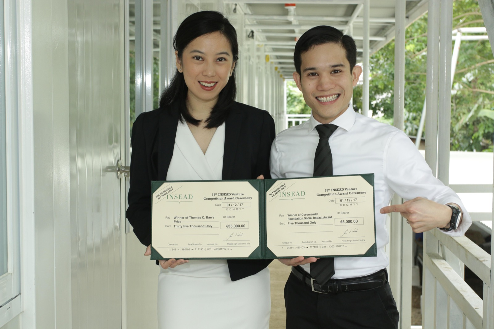
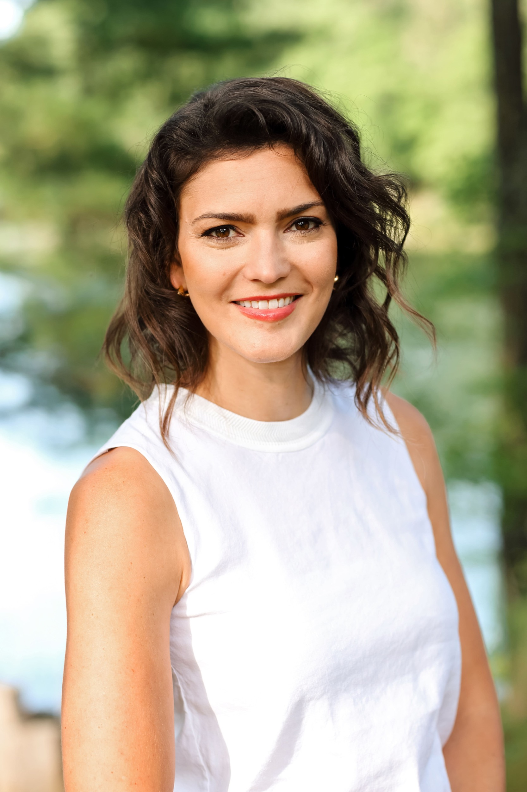
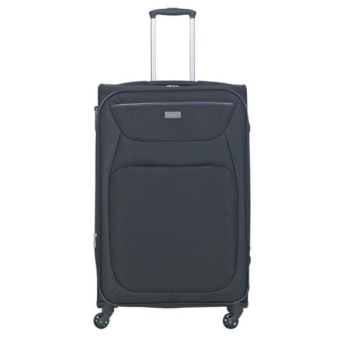
Concierge
Provide a customized manual service that delivers the offering by hand, working directly with customers.
Crowdfunding
Use a platform like Kickstarter to turn interest into pre-orders: real money up front, before you build at scale.
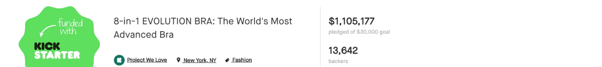
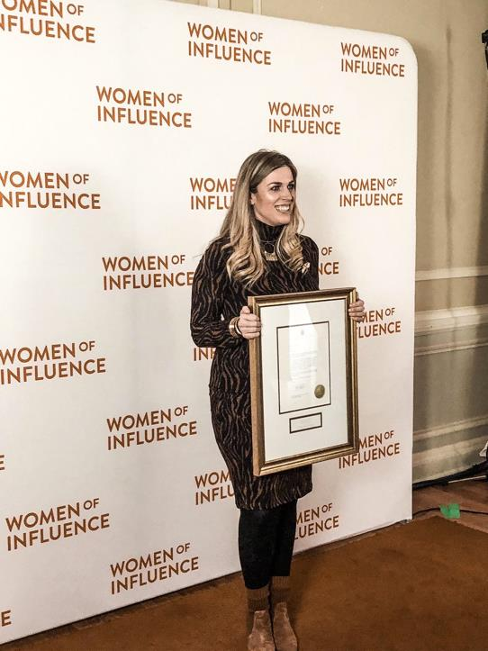
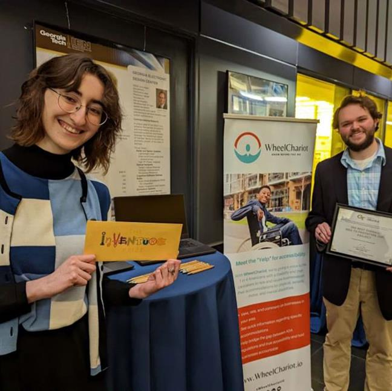
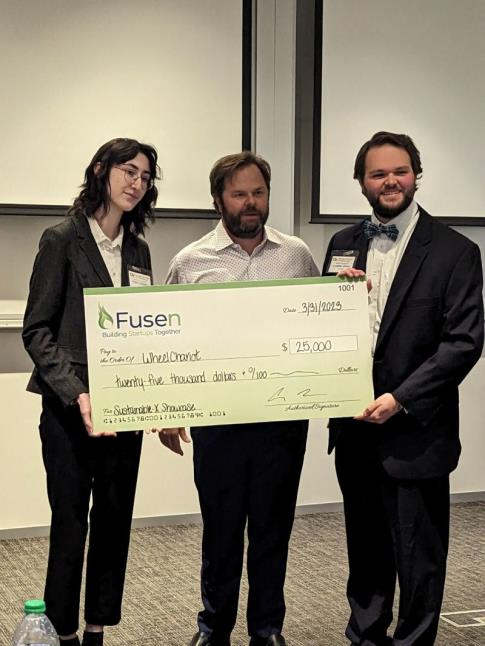
Non-functional prototype
Build a front end with interface elements that simulate the product, with nothing actually working yet.
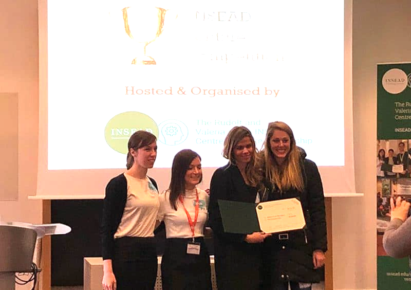
Audience building
Build a community of potential customers by giving valuable things away free, then monetize later.
Six ways to learn before you build.
1 · Wizard of Oz
Automated front, human back.
2 · Landing page & video
Sell the promise, count the clicks.
3 · Concierge
Deliver it by hand first.
4 · Crowdfunding
Demand paid in advance.
5 · Non-functional prototype
Looks real, does nothing yet.
6 · Audience building
Free value now, money later.
The right method is the one that kills your riskiest assumption the cheapest.
A great MVP learns the most for the least.
Aim for the fastest learning, not the smallest product. Which assumption are you least sure of? What is the cheapest test of it?
"We must learn what customers really want, not what they say they want, or what we think they should want."
Eric Ries · The Lean Startup
Tonight: turn assumptions into evidence.
Finish the VCA
Both canvases plus your 3 riskiest assumptions. This is A5.
Line up your interviews
Find at least 10 people you can talk to, and design 1 to 2 experiments or a prototype to test the riskiest assumptions. This is A7.
Friday morning, in class
A 40-minute peer review (A6) with a matched team, then time to update before your short final pitch.
Your final pitch is four slides in eight minutes.
- The thesis and the pitch. State X will buy Y because of Z, and sell it.
- VCA outcomes and risks. High level, no canvas: your main hypotheses, your point of comparison, why customers choose you, and your biggest risks.
- Customer interview plan. Who you will talk to, and what each conversation teaches you.
- Experiments and prototypes. The one or two tests that attack your riskiest assumptions.
4 minutes to present, 4 minutes for questions.
One slide each, eight minutes total. Keep the VCA high level; do not show the full Business Model Canvas.